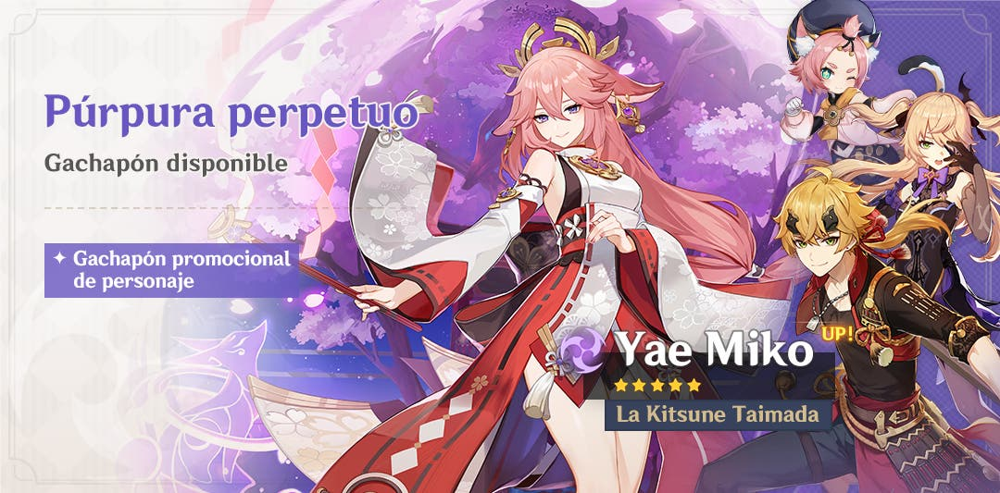

La Suma Sacerdotisa de Narukami se une a la aventura.
Banners
Tal y como era de esperar, las sospechas acerca de Yae Miko se confirmaron. La versión 2.5 nos trae una misión legendaria
sobre la kitsune además de un banner propio, a continuación de dicho banner, los jugadores que hayan ahorrado para
la Shogun Raiden y/o para Sangonomiya Kokomi tendrán su oportunidad de probar suerte en cuanto la duración del banner de
Yae Miko acabe.
Si creías que esto era lo único, estabas muy equivocado porque, cuando completes la misión legendaria de Shogun Raiden,
tendrás disponible la misión legendaria de Yae Miko, además de nuevos eventos a montones. Sin duda no habrá tiempo para aburrirse.

A continuación podrás ver un pequeño vídeo en el que se muestra el set de movimientos de Yae Miko.
Eventos
Abrimos la veda de eventos con las misiones legendarias de Yae Miko y Shogun Raiden, podrás conocer a ambos personajes
en sus respectivas misiones y averiguar más sobre la historia de Inazuma y de la propia Arconte. También tendremos un evento en el que servirás
bebidas a los personajes de Mondstadt en la taberna de Diluc, un evento en el que deberás explorar toda Enkanomiya y podrás
ganar Mora, protogemas e incluso un catalizador de 4 estrellas. Además, vuelve uno de los eventos mejores recibidos por
la comunidad, Hyakunin Ikki (El club del combate), el evento en el que organizas 6 parejas de tus personajes para combatir
contra los monstruos que te pongan por delante.
Otro evento curioso revelado en el directo es uno en el cual debemos crear nuestro propio dominio para que otros jugadores
puedan probarlo; una buena oportunidad para dar rienda suelta a la creatividad y conseguir crear buenos retos.
Pero nada de esto se compara con uno de los platos fuertes de la 2.5; un boss semanal de la Shogun Raiden que podrás
desbloquear al completar su misión legendaria.
Te dejamos la vista previa del boss de la Shogun